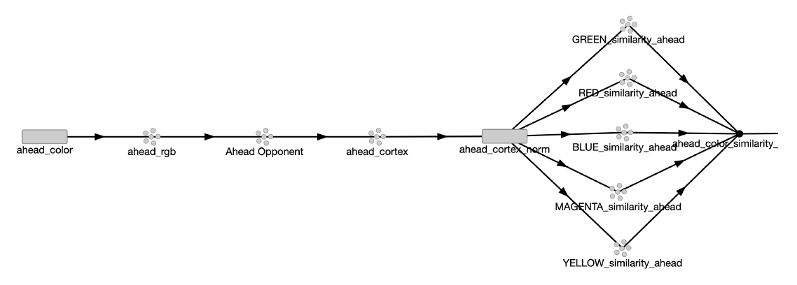
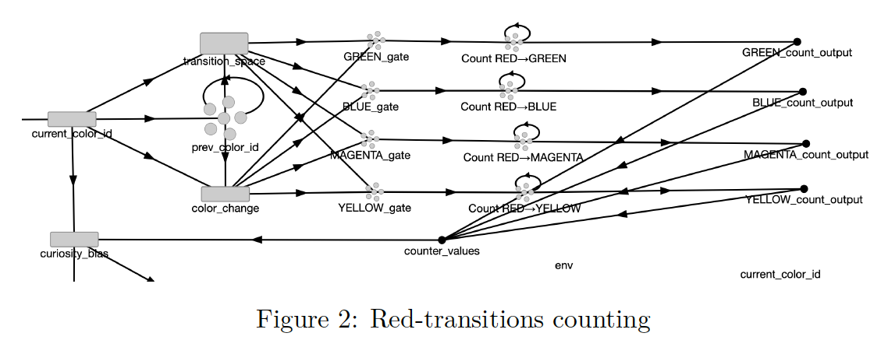

The goal of this project was to design and implement a cognitively inspired agent capable of navigating a simple grid world using the Nengo framework. The environment consists of walls and colour-coded locations (Red, Green, Blue, Yellow, and Magenta), and the agent is required to explore the environment, recognise colours despite sensory noise, and learn sequential relationships between coloured locations. In particular, the agent must detect and count colour transitions, focusing on how often different colours follow red during its navigation.
Nengo is grounded in the Neural Engineering Framework (NEF), which models cognition using populations of simulated neurons and dynamical systems principles. The agent is implemented using neural representations and transformations rather than symbolic rules, favouring biologically inspired mechanisms within a simplified simulation.

Figure 1 — Overview of the perception pipeline implemented in Nengo, showing parallel processing for current and ahead colors through three hierarchical layers.The perceptual architecture transforms raw colour information from the environment into structured neural representations suitable for categorisation, comparison, and memory. The design is inspired by established models of biological colour vision, while remaining deliberately simplified to fit the constraints of the task and the Nengo environment.
The agent receives colour information as numerical RGB triplets derived from the grid-world environment. Each colour channel lies in the range [0, 1], and Gaussian noise with standard deviation σ = 0.01 is added to simulate sensor uncertainty and test robustness. Each RGB signal is encoded into a neural population through the implementation of an ensemble, embedding perception directly in neural dynamics and introducing biologically plausible noise and variability.
White cells play a special role in the task and are not considered meaningful colours. To prevent noise from causing spurious classifications near white, nearly-white inputs are explicitly snapped to a fixed white reference when their Euclidean distance from pure white [0.9, 0.9, 0.9] is less than 0.05.
This layer implements opponent processing, a strategy used by the visual system to make colors easier to distinguish. Instead of treating red, green, and blue independently, the brain compares them in pairs. The implementation uses a simplified linear transformation:
The opponent signals are projected into a "cortical" colour space represented by ensembles with four dimensions. A synaptic time constant τ = 0.01 seconds is applied to this layer, introducing temporal smoothing that stabilises the representation over time and mitigates the effects of sensory noise.

Figure 1 — Overview of the architecture implemented to count the red transitions.After transforming raw RGB signals through opponent processing and cortical representation, the agent performs colour matching by mapping continuous perceptual representations onto discrete colour categories using cosine similarity:
similarity(x, p) = x · p = ‖x‖ ‖p‖ cos θ
The classification threshold was set to 0.4, meaning a colour is recognised only if its similarity to a prototype exceeds this value; otherwise, the input is treated as white.
Notably, the red colour similarity ensemble was given additional neural resources (180 neurons vs. 150 for other colors) to improve its representation, as red transitions are central to the task requirements. This allocation reflects a form of attentional bias toward task-relevant features.
The core cognitive requirement is that the agent learns sequential relationships between colours — specifically, how often different colours follow red. This demands a form of memory that retains a trace of the previously visited colour and combines it with the current one to detect a transition event.
A recurrent ensemble of 300 neurons represents a 5-dimensional vector (one dimension per colour category). Recurrent connections are configured with a transform of 0.9 and a synapse of 0.1 seconds, creating a classic leaky integrator that holds onto the previous colour identity while gradually decaying.
To detect a transition, the system uses the outer product of the previous colour (P) and current colour (C) vectors, creating a 5×5 grid where each row represents a previous colour and each column represents a current colour. This 25-dimensional representation serves as the explicit, structured foundation for detecting all possible colour changes.
A colour-change detector gates the counting mechanism, ensuring transitions are only registered when the agent moves from one coloured cell to a different coloured cell. Counters are implemented only for red-origin transitions (Red→Green, Red→Blue, Red→Magenta, Red→Yellow), each with strong recurrent self-connection (transform 0.99, synapse 0.1s) creating persistent statistical memory over the timescale of exploration.
The agent implements a form of boredom avoidance or novelty-seeking behaviour: it develops a preference for less-familiar paths based on accumulated experience. When on a red square, the agent examines the colour ahead and calculates the familiarity of that specific transition as the proportion of all red-origin transitions of that type.
Familiarity is converted into a steering bias using the rule: bias = -0.6 × familiarity. The negative sign creates a soft repulsion from well-trodden paths, encouraging exploration of novel transitions.
The most significant implementation challenge was balancing curiosity bias against wall avoidance. The solution uses context-sensitive gain scaling based on the distance to walls:
The resulting behaviour is a continuous negotiation between low-level collision avoidance and higher-level, experience-modulated exploration. In large, open environments, the curiosity mechanism becomes more visible; in cluttered spaces, wall avoidance dominates as intended.
Under low to moderate noise levels, colour recognition was generally stable. When the agent entered a coloured cell, the corresponding category typically dominated the similarity computation, resulting in clear classification. White regions were handled correctly in most cases. Some instability was observed for perceptually similar colours (green and yellow) as noise increased, consistent with overlap in the underlying representation space.
Red-origin transition counters increased over time in a manner broadly consistent with the agent's experienced trajectories. Frequently encountered transitions accumulated higher values, while rarely encountered ones remained low. The counters captured meaningful long-term statistics rather than arbitrary fluctuations.
The curiosity mechanism produced a subtle influence on navigation. In larger, open environments, the agent's trajectories gradually diversified, showing avoidance of highly familiar transitions. The behaviour is akin to a slight drift rather than sharp turns, creating gradual exploration of new paths while maintaining safe navigation.
This project highlights both the strengths and challenges of building cognitively inspired agents using Nengo. The agent implements two distinct memory mechanisms: short-term working memory for immediate context (enabling transition detection) and long-term statistical memory for accumulating transition frequencies. While effective for the task, this design cannot separate transitions occurring in different spatial contexts; all red-to-green transitions are counted identically, regardless of location.
The curiosity mechanism represents a rudimentary form of adaptive exploration. By biasing behaviour away from familiar transitions, the agent exhibits meaningful experience-dependent behavioural change over time. Future work could explore more sophisticated memory structures (such as Hopfield networks for attractor dynamics) or more complex navigational strategies to handle richer environments.
This project successfully demonstrates that relatively simple, biologically motivated mechanisms are sufficient to produce robust colour perception and meaningful experience-dependent behaviour under moderate noise. The agent distinguishes the required colour categories, tracks red-origin transitions over time, and exhibits exploratory biases driven by accumulated experience. While the model remains a simplified abstraction of biological vision and learning, it provides a useful foundation for future extensions involving adaptive mechanisms, richer memory structures, or more complex environments.